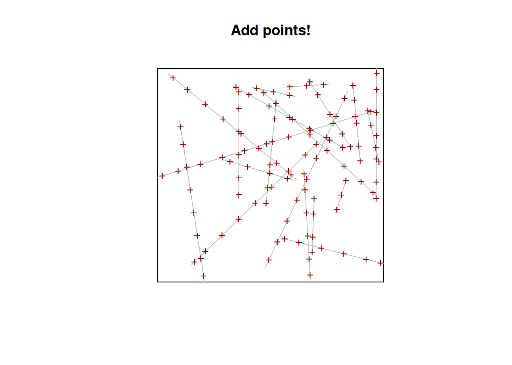

Recently, someone posted a question on Linkedin about sampling along some lines. It may not be obvious for everyone why anyone would like to do that so let’s provide some examples: sampling in a river every N meters, sampling species diversity along transects. The lines or segments can be used as a way to measure some kind of gradient or to follow something that can be represented as a line. A line is just a one-dimensional (1D) representation, so even if we use it in space it can represent way more stuff… like time!
The question had to do with QGIS and Postgis. I was a bit curious about how to do it in R and also wanted try with QGIS (later!). I used rocker/geospatial:4.0.4 with sf (0.9.0) and spastat (1.63-3) packages (and their respective dependencies). My exploration went a bit longer than expected, so I will just start with spastat then keep going.
Note
Since I first wrote this article {spatstat} have become a “spatstat verse”1. I just updated (“2024-06-04”) with the specific, new, spastat package here: spatstat.geom_3.2-9
First, spatstat is great!
It is easy when you know about it, but obviously Spatstat is great (and needs some advertising!). Spastat is a package designed for spatial statistical analysis and has a strong focus on point patterns. A book came out about it and it is also a good read if you are interested in this topic (Baddeley, Rubak, and Turner 2015).
pointsOnLines
While looking for how to make a regular sample in a line in a spatstat, I found pointsOnLines with this nice documentation page. This looks perfect for us. Let’s try it!
The first line just creates some lines (“randomly”). The only difficulty is the psp function. This function creates an object of class psp or a line segment pattern. Spatstat uses its own objects and methods but it is easy to convert them as you can see in the second line where the sf package is used to write our dear friend shapefile. I commented the line because I didn’t want to run a new set of lines every time.
Reading layer `some_lines' from data source
`/Users/olivierleroy/Documents/btl/posts/2021-03-01-sampling-allong-a-line/some_lines.shp'
using driver `ESRI Shapefile'
Simple feature collection with 20 features and 1 field
Geometry type: LINESTRING
Dimension: XY
Bounding box: xmin: 0.02009798 ymin: 0.03753605 xmax: 0.9965629 ymax: 0.9619593
CRS: NA
#\ label: reading them back some_lines <- spatstat.geom::as.psp(sf::st_geometry(lines), window =owin()) # read them backplot(some_lines, main ="Draw some lines", col ="grey")
I admit that indexing with negative 1 ([-1,]) is a bit ugly, but if you want to use the almighty shapefile you can only use one type of geometry (no one is perfect!). That’s why you have to remove the polygon that is the bbox at the first line (or use some more hipster geo format). Finally, in the third line, we read it back. Spatstat works primarily in projected coordinates and this should be kept in mind (we don’t care too much about our lack of CRS here, which would not be the case in a real-world project which could fail if you use geographic coordinate systems).
Now we can use the pointsOnLines function to create an object of ppp type (AKA points pattern) and plot the points. We just use two arguments, the first one is our lines and the second eps is Spacing between successive points. As stated in the details section of the documentation the spacing of eps is measured in coordinate units of X”. Here we used some numbers (20) from a uniform distribution with the default arguments (min = 0 and max = 1) so eps = 0.1 was fine. I also liked to shortok default argument so I didn’t change it.
sampling_points <- spatstat.geom::pointsOnLines(some_lines, eps =0.1)plot(some_lines, main="Add points!", col ="grey")plot(sampling_points, add =TRUE, pch ="+", col ="darkred")

sf::st_write(sf::st_as_sf(sampling_points)[-1,], "sampling_points.shp") # save them
Where is the first sample placed on?
One question remains! Where should the first point in a line be placed? This is trickier than it looks: what happens when the length of a lines is not a multiple of our spacing value? Where should we start placing points?
We can start with a simple example : just one line. We didn’t set up any units but to make it simple, let’s use meters (m).
fenetre <- spatstat.geom::owin(xrange=c(-1,11), yrange=c(0,2)) # define a reusable window line <- spatstat.geom::psp(0, 1, 10, 1, window = fenetre) # one line length = 10guide <- spatstat.geom::ppp(0:10, rep(1,11), window = fenetre) # create some guidesmid <- spatstat.geom::ppp(0.5:9.5, rep(1,10), window = fenetre)# create more guidessamples <- spatstat.geom::pointsOnLines(line, eps =3) # spacing of 3plot(line, col ="grey", main ="") # plot everything plot(guide, pch ="|", add =TRUE)plot(mid, pch ="+", add =TRUE, col ="grey")plot(samples, pch =16, col ="darkred", add =TRUE)
Well this innocuous question bring us something unexpected. We expected 3 samples but we got 4 and it looks like the first sample, on both sides, is located at 1 m from the end/beginning of the line (in a circular line they will be 2 m apart) but something is staring to be problematic : the only spacing of 3 is between the second and third sample, other spacing is 2.5 m. If we take a longer line (25 m like below) we get the same pattern (1m, 2.5m then 3) but with more samples spaced with 3 m.
fenetre <- spatstat.geom::owin(xrange=c(-1,26), yrange=c(0,2)) # define a reusable windows line <- spatstat.geom::psp(0, 1, 25, 1, window = fenetre) # one line length = 10guide <- spatstat.geom::ppp(0:25, rep(1,26), window = fenetre) # create some guidessamples <- spatstat.geom::pointsOnLines(line, eps =3) # spacing of 3plot(line, col ="grey", main ="") # plot everything plot(guide, pch ="|", add =TRUE)plot(samples, pch =16, col ="darkred", add =TRUE)
Let’s dive into the code (thx open source!). I will skip the part that defines the function, check what arguments are used, etc.. and do a first stop at L25-L32. This part is the code for what should be done if we have too lines that are too small (length <= spacing) and shortok == TRUE (our setup). We can see that with this option, a sample point will be added at the middle of our small line.
I will then move to the part for every other (i.e., non-small) line. We can also skip the loop and the bind part and just try with one line. Below I have just reproduced L36 and 47 :
# re using same example fenetre <- spatstat.geom::owin(xrange=c(-1,11), yrange=c(0,2))line <- spatstat.geom::psp(0, 1, 10, 1, window = fenetre) linedf <-as.data.frame(line)eps <-3# some spacingleni <- spatstat.geom::lengths_psp(line) # length of the segment : 10 nwhole <-floor(leni/eps) # how many whole segments can we fit : 3if(leni/eps - nwhole <0.5&& nwhole >2) # if we do 3 nwhole we have some "leftovers" nwhole <- nwhole -1# I guess it is a design choice rump <- (leni - nwhole * eps)/2# brks <-c(0, rump + (0:nwhole) * eps, leni) # making bricks: 0 2 5 8 10nbrks <-length(brks) # how many bricks: 5# points at middle of each piecess <- (brks[-1] + brks[-nbrks])/2tp <- ss/leni # make it relativex <-with(linedf, x0 + tp * (x1-x0)) # give them coordinatesy <-with(linedf, y0 + tp * (y1-y0))
The authors have made some design choices. Instead of going for 3 points, they have gone with 4 and focused on their definition : “Given a line segment pattern, place a series of points at equal distances along each line segment.”. Points are not located at every x spacing but instead at equal distances: if we set 3 points they are not at the same distance anymore, so it seems they opted to make a compromise, as when (L9) adds a point and decreases the spacing a bit and when not doing so. I feel this is a correct choice when sampling and it remind me a lot of reflections about the all block quadra variance family and the importance of the starting point.
Conclusion
Spatstat is definitely a statistical package at heart and you have to be thoughtful when you use it a bit outside of its main goal (as we figured out)! If you want to use it, you will have to adjust it a bit or remove the first measures at the ends of the lines.